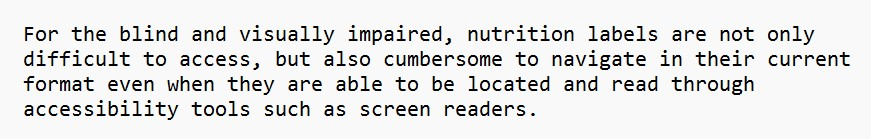
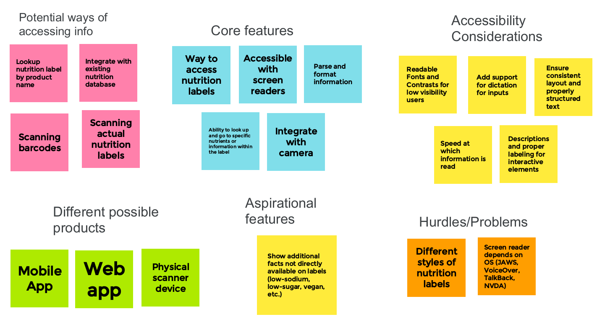

For the blind and visually impaired, nutrition labels are not only difficult to access, but also cumbersome to navigate in their current format even when they are able to be located and read through accessibility tools such as screen readers.

Our affinity diagram explores the essential functionalities that the product should provide, different methods that could be employed to access nutrition label information, some considerations to ensure the product is accessible to users with varying levels of visual impairment, the potential platforms or formats for delivering the product, and an additional feature set that might not be essential but could enhance the user experience or provide additional value.